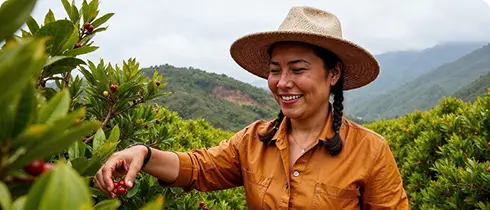
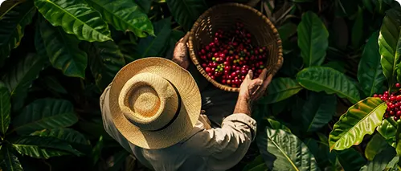

<!DOCTYPE html>
<html lang="es">
<head>
  <meta charset="UTF-8">
  <meta name="viewport" content="width=device-width, initial-scale=1.0">
  <title>Café Tierra Aroma — Inicio</title>
  <link rel="stylesheet" href="css/estilos.css">
  <link href="https://fonts.googleapis.com/css2?family=DM+Serif+Text&display=swap" rel="stylesheet">
</head>
<script src="js/script.js"></script>
</body>
</html>
<body>
  <!-- Encabezado -->
  <header class="site-header">
    <div class="container header-inner">
      <div class="logo">
        
        <span>Café <strong>Tierra Aroma</strong></span>
      </div>
      <!-- Menú hamburguesa para móvil -->
      <input type="checkbox" id="nav-toggle" class="nav-toggle">
      <nav class="main-nav">
        <ul>
          <li><a href="index.html" class="activo">Inicio</a></li>
          <li><a href="productos.html">Catálogo de productos</a></li>
          <li><a href="carrito.html">Carrito de compras</a></li>
          <li><a href="historial.html">Historial de pedidos</a></li>
          <li><a href="login.html">Login / Registro</a></li>
          <li><a href="perfil.html">Perfil de usuario</a></li>
          <li><a href="cerrar.html">Cerrar sesión</a></li>
        </ul>
      </nav>
      <label for="nav-toggle" class="nav-toggle-label"><span></span></label>
    </div>
  </header>

  <!-- Contenido principal -->
  <main class="container">
    <section class="hero">
      <h1>Bienvenido a Café Tierra Aroma</h1>
      <h2>El auténtico aroma del café, directo a tu hogar</h2>
    </section>

    <section class="historia">
      <h2>Nuestra historia</h2>
      <div class="historia-imagen">
  
</div>
    </section>
  </main>
  <section class="tarjetas-historia container">
  <article class="tarjeta-texto">
    <h3>Bienvenidos a Tierra Aroma</h3>
    <p>
El café que nace en las manos de mujeres valientes y apasionadas. Desde la vereda Pamplonita, llevamos a tu taza el sabor auténtico de nuestra tierra, cultivado con amor y esfuerzo.
   </p>
    <ul class="puntos">
      <li>Café cultivado por mujeres cafeteras de Santander</li>
      <li>Hecho con pasión, compromiso y tradición</li>
    </ul>
  </article>

  <article class="tarjeta-texto">
    <p>
En la vereda Pamplonita, al oriente de Colombia, un grupo de mujeres valientes decidió transformar su realidad a través del café. Así nació Café Tierra Aroma, fruto del esfuerzo de la Asociación de Mujeres Cafeteras de Pamplonita (COOMUCAPA), un colectivo que surgió con el apoyo del programa Campo Emprende.

Lideradas por Angélica Díaz y Sonia Monsalve, estas mujeres unieron fuerzas para convertir el café en el símbolo de su región y motor de empleo digno. Cada taza de Tierra Aroma cuenta la historia de una comunidad que eligió crear oportunidades, dignificar el trabajo rural y reivindicar el papel de la mujer en el campo colombiano.    </p>
  </article>

  <article class="tarjeta-texto">
    <h3>☕ Nuestro Café: Un Sabor con Historia</h3>
    <p>
Cada grano de Tierra Aroma cuenta una historia de lucha, esfuerzo y sueños cumplidos. En COOMUCAPA, las mujeres cafeteras trabajamos juntas para ofrecerte un café tostado y molido de calidad, resaltando los sabores únicos de nuestra región.    </p>
    <ul class="puntos">
      <li>100% café colombiano</li>
      <li>Cultivado con amor y respeto por la naturaleza</li>
      <li>Tostado artesanalmente para una experiencia inigualable</li>
      <li>¡Pide el tuyo y disfruta del auténtico aroma de Santander! </li>
    </ul>
  </article>
</section>

<div class="tarjetas-mision-vision">

  <div class="tarjeta-mv">
    
    <h3>Misión</h3>
    <p>
      Somos un grupo de mujeres cafeteras, empoderadas y emprendedoras de la Vereda Pamplonita, cuya misión es fomentar el procesamiento del café pergamino seco producido en la región en café tostado y molido. Que permita resaltar sus propiedades organolépticas y con este valor agregado mejorar la calidad de vida de las familias Cafeteras.
    </p>
  </div>

  <div class="tarjeta-mv">
    
    <h3>Visión</h3>
    <p>
la Asociación de Mujeres Cafeteras De Pamplonita COOMUCAPA, para el año 2032, estará en capacidad de procesar el 70% del café cosechado y beneficiado en la vereda pamplonita y su producto principal, café tostado y molido Tierra Aroma será reconocido a nivel nacional por su calidad y propiedades organolépticas, contando con el sello de la Federación de cafeteros de Colombia y de Juan Valdez. En su lugar de funcionamiento se implementará una tienda de Café Tierra Aroma en la cual se ofrecerá al cliente los productos derivados del café.    </p>
  </div>

</div>
<section class="tarjeta-texto tarjeta-seguridad">
  
  <h2>Seguridad y Confianza en Tierra Aroma</h2>
  <p>
    En Tierra Aroma, nos preocupamos por la seguridad de nuestros clientes 
    y la protección de su información. Implementamos diversas medidas para 
    garantizar una experiencia segura y confiable:
  </p>
  <ul class="puntos">
    <li> Certificado SSL: Conexión protegida con cifrado seguro.</li>
    <li> Protección de Datos Personales: No vendemos ni compartimos datos.</li>
    <li> Pagos Seguros con pasarelas certificadas.</li>
    <li> Autenticación segura contra accesos no autorizados.</li>
    <li> Monitoreo y prevención de fraudes.</li>
    <li>Política de privacidad clara y transparente.</li>
    <li> Tu seguridad es nuestra prioridad.</li>
  </ul>
</section>


  <!-- Pie de página -->
  <footer class="site-footer">
    <div class="container footer-bottom">
      <div class="social-links">
        <a href="https://www.instagram.com/cafetierra_aroma" target="_blank">Instagram</a>
        <a href="https://www.facebook.com/people/Caf%C3%A9-Tierra-Aroma/61552959929312" target="_blank">Facebook</a>
        <a href="https://api.whatsapp.com/send/?phone=3125735183" target="_blank">WhatsApp</a>
      </div>
      <p>&copy; <span id="year"></span> Café Tierra Aroma</p>
    </div>
  </footer>

  <script>
    document.getElementById("year").textContent = new Date().getFullYear();
  </script>
</body>
</html>
